以Web的名义*
- 向App告白
About Me:
- 陈虹如 - 岑安 - horizon
- blog: hongru.cnblogs.com
- github: github.com/hongru
- e-mail:
- hongru.chenhr@gmail.com
- 时代的变迁 - web apps降临
- 顺风而下 - 前端工程师的转身
- 逆流而上 - html5的困兽之斗
- 四两拨千金 - app多模块的组织
- 双刃剑 - 大规模前端模版的使用
- 曙光乍现 - 走出web game的红海
- 我们即上帝 - 轻巧掌握游戏世界中的一景一物
- 末日之前 - 向app告白
1
｛Web Pages｝
｛Web Apps｝
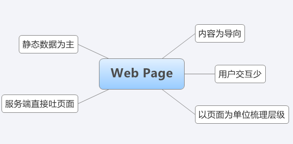
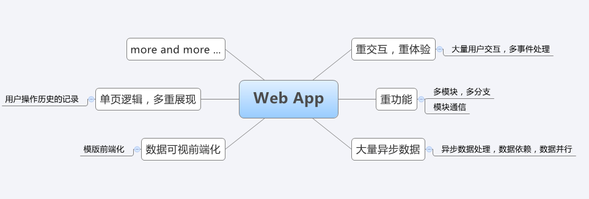
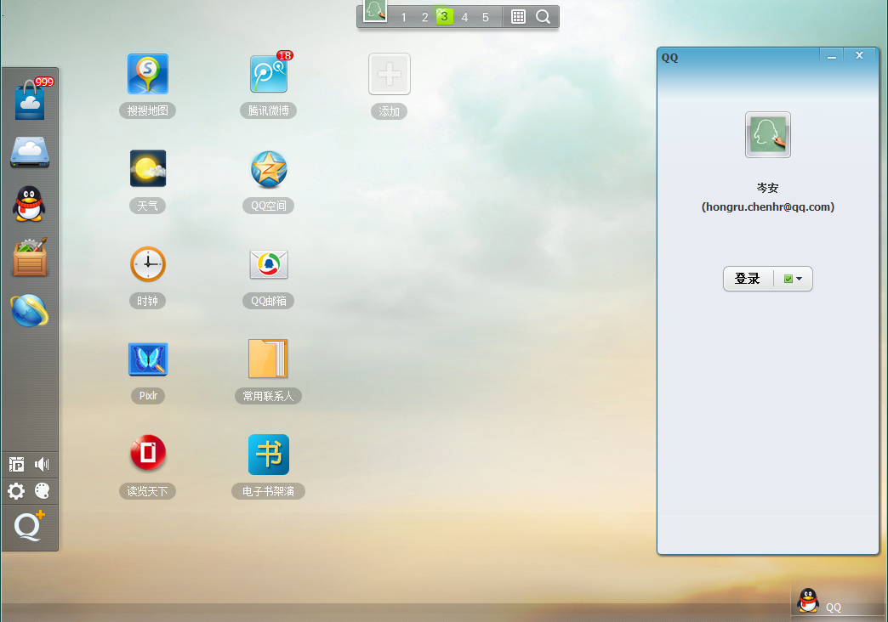
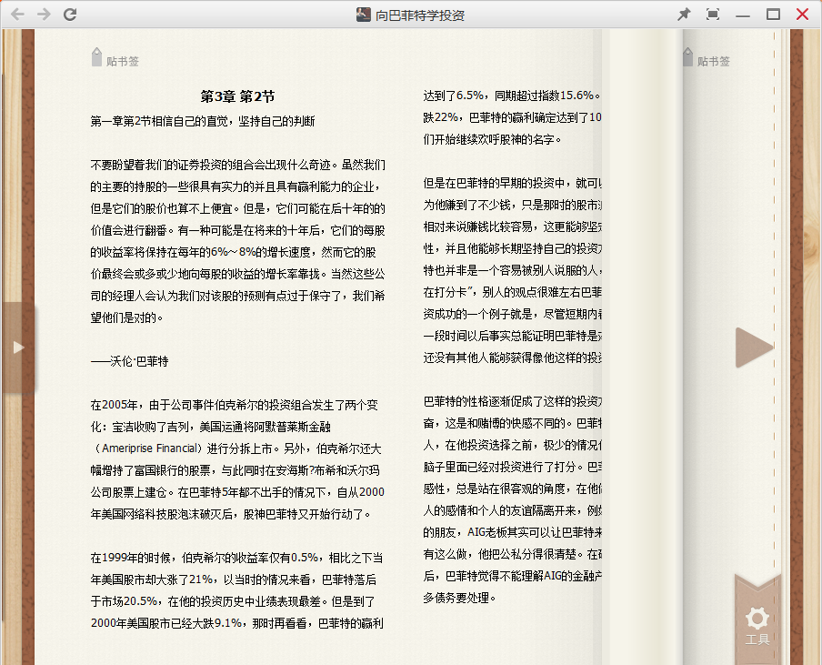
2
前端“攻城湿”
华丽的转身
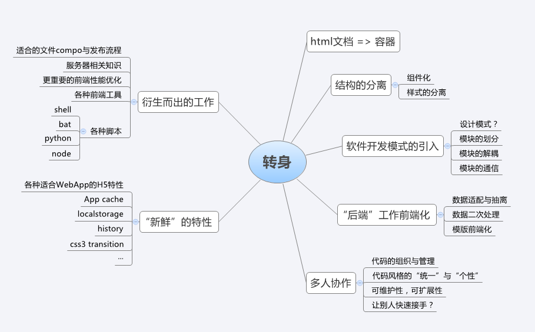
3
Html5 ?
canvas
classlist
contenteditable
dataset
dnd
on/offline
file-api
geolocation
userMedia
history
manifest
postMessage
sql-database
storage
video
audio
websocket
xhr2
css3
SVG
MathML
WebGL
Forms
JSON
Base64
IndexDB
local
session
worker
notification
诸侯割据，小众的玩物
4
四两能拨千金？多模块的组织
- 积木堆到后面，牵一发动全身
- 即使是自己的代码，歇一阵不管，思路要理半天
- 别人的代码，我是发愣呢，还是发愣呢，还是...
- 选择器猖狂的年代，连入口也会和你躲猫猫
JavascriptMVC
Backbone
Knockout.js
...
拿不起玄铁重剑，那么...
Director Pattern
- 迪米特法则（Law of Demeter）
- 观察者/订阅者 模式
一台剧有一个导演，所有演员都须听他的。
演员之间尽量不要直接沟通，让导演掌控全局。
导演醒来 >> 准备好开演前需要做的事 >> 叫醒所有属于他管的演员 >> 给第一幕的演员分配最开始的一次任务
导演观察着所有的演员；
演员只关注他感兴趣的事儿；
一个导演醒来的时候，他必须清楚：
1.开戏前的准备工作。
2.这场戏的第一幕会有哪些演员参与，他们分别需要做什么事。
一个演员被导演叫醒的时候， 他需要知道：
1.他最开始该是什么样子
2.如果自己发生了事情（比如被click之类）的话，立刻通知导演。
3.拿到导演反馈回来的命令，接着演。
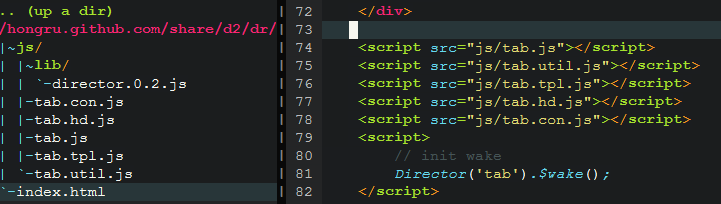
- 接口调用集中化
- 事件处理集中化
- 需要派发的消息通过notify来实现
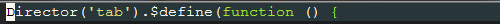
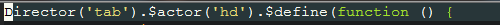
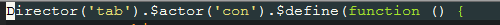
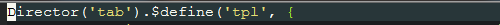
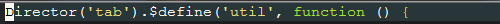
{ Director }
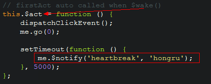
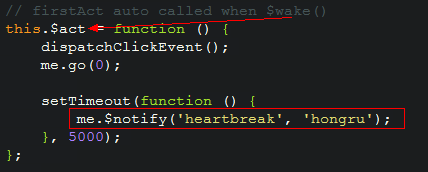
{ Actor }

5
- data -> view
- 灵活的view
- 调试基于词法的tpl
- 用户操作历史history
- 事件binddelegate
Template
冒泡到指定属性 例如[data-cmd]|[cmd] 的el，以他作为target处理
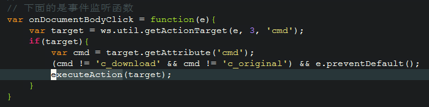适配 command
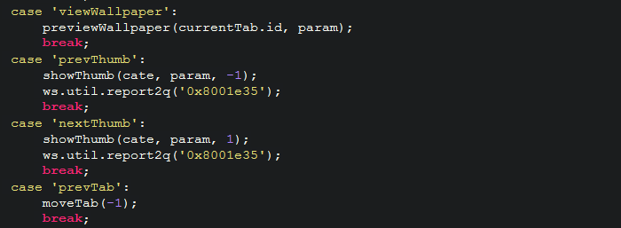不喜欢 switch case
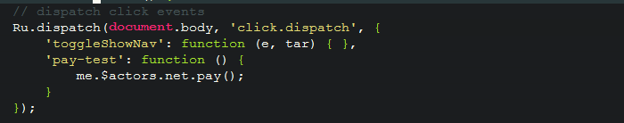- reflow 你怕不怕？怕不怕我不怕
- 内存泄漏 你怕不怕？怕不怕我不怕
- 事件管理 你怕不怕？怕不怕我不怕
6
我也是“App” (^^)
FSM 的意义
- update [和 draw] 的派发模型
- 流程控制，状态解耦
- 状态流转的事件机制
以功能为节点划分
以流程为节点划分
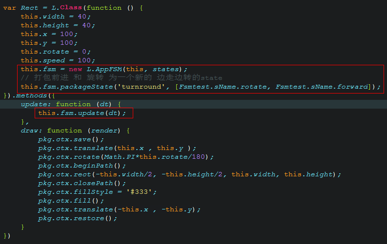
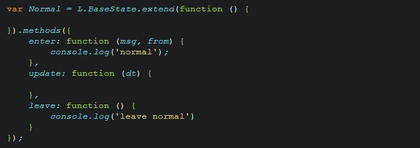

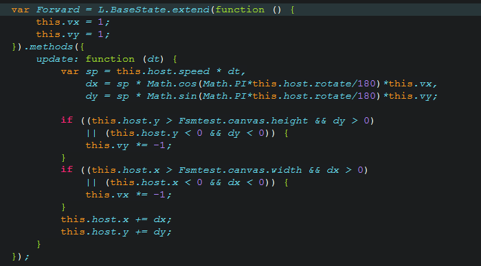
Thanks